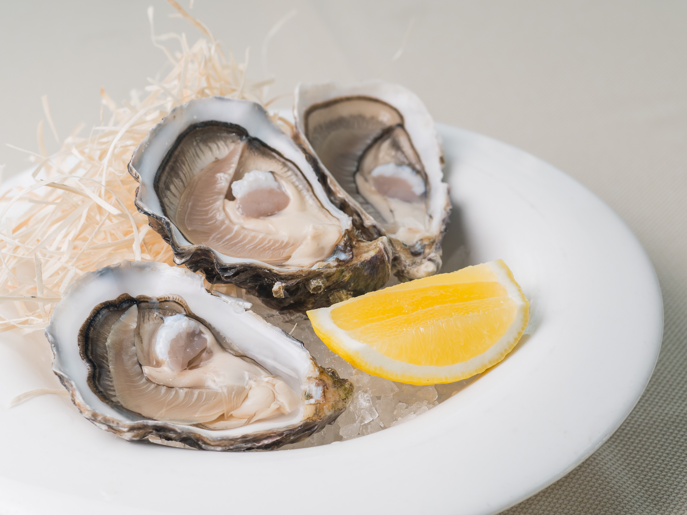

Aaron Black
May 8th, 2021
-
Vegtables Base Bar
〒350-1109 Saitama, Kawagoe, Kasumigasekikita, 4 Chome−２２−24
What sorta hipster wouldnt't love a vintage, electic bar with a small cafe like setting that features iced coffee based drinks? The local atomosphere is accentutaed by the owner's updates comming only through facebook. Be one of their 400 followers online. When it comes to a local experience, it doesn't get more localized than this.
A Japanese cafe experience wouldn't be complete without individually brewed espresso, the recommended special!
Can you smell the fresh roasted aroma?
-
黒潮丼丸 霞ヶ関店 - Kuroshio Donmaru
〒350-1102 Saitama, Kawagoe, Matobakita, 2 Chome−１１−13
Inexpensive fresh seafood is the name of the game here! With small bentos of succulent eel, mackerel, tuna, and other delicious fish starting at just 500¥ you can't go wrong. Stop here for a great bite to eat if you're on the go!
The big 900¥ poke bowl has a taste of everything!

Poke Bowl! Gotta eat 'em all!
-
Oyster and Wine Kitchen K
〒350-1122 Saitama, Kawagoe, Wakitamachi, 17-3-9 Building B-1F
Sophistication in simplicity, oysters and wine have never been paired better than this! There's a huge variety of food for even the pickiest of eaters.
Oysters on the halfshell!
How could I not recommend the raw oysters at a place like this?